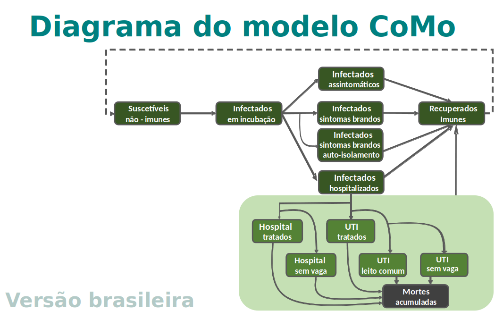

Comparação entre cenários
Última revisão em 19 de maio, 2020 (15:38, Horário de Brasília)O que os modelos nos contam do passado e do futuro da epidemia? Confira projeções de médio prazo para a epidemia de Covid-19 no Município de São Paulo.
O que os modelos nos contam do passado e do futuro da epidemia? Confira projeções de médio prazo para a epidemia de Covid-19 no Município de São Paulo.
As simulações de curvas epidêmicas, isto é, gráficos do número de infectados ativos em cada dia, que são apresentadas nas figuras ao lado, ilustram o importante efeito das medidas de distanciamento social implementadas até agora: o pico de infectados, em um cenário sem quaisquer medidas de distanciamento adotadas, poderia já ter ocorrido no início de abril e contado com milhões de casos (cenário (a)), mas devido às medidas de mitigação já tomadas, esse pico foi adiado e achatado.
Estima-se que o número real de infectados no começo de abril foi, ao menos, 10 vezes menor, se comparado ao pico que teria sido observado no cenário hipotético de evolução descontrolada da doença.
Se expandirmos os resultados da simulação para os próximos meses, podemos ter uma idéia da importância das medidas de distanciamento social a médio prazo.
Abaixo comparamos cenários em que, a partir de 31 de maio de 2020, (b) as medidas atuais são completamente descontinuadas e (c) as medidas atuais são mantidas indefinidamente com cobertura contínua e consistente com a do início das recomendações de distanciamento no município.
Nota-se que o pico de infectados, que poderia ter ocorrido no início de abril e contado com milhões de casos (cenário (a)), foi adiado e achatado (cenários (b) e (c), que aparecem sobrepostos nas figuras até 31 de maio).
Note-se, no entanto, que se abandonássemos as atuais medidas de mitigação no dia 31 de maio, a epidemia voltaria a se expandir formando um novo pico ao final do mês de maio, com um número de mortes quase tão alto quanto ao do cenário de expansão descontrolada da doença. Assim, o esforço feito até então seria em grande parte perdido.
Já no caso de manutenção de medidas (cenário (c)), a curva epidêmica se manteria com pico estimado para o final de maio e o achatamento evidente implicaria em cerca de 10 vezes menos infectados e mortos.
Aqui apresentamos uma comparação entre casos hospitalizados em leitos comuns (à esquerda) e casos hospitalizados em unidades de tratamento intensivo (UTI) (à direita) nos cenários em que (a) nenhuma medida de distanciamento social tivesse sido aplicada; (b) as medidas e aderências nos níveis atuais fossem mantidas apenas até 31 de maio e (c) as medidas atuais fossem mantidas indefinidamente, com níveis de adesão iguais aos do início do distanciamento social. As linhas horizontais tracejadas indicam a capacidade aproximada do sistema de saúde municipal para cada tipo de leito, baseada em dados do Cadastro Nacional de Estabelecimentos de Saúde (CNES) de fevereiro de 2020 [4].
Note que o cenário (c) é o único entre os três cenários estudados que não prevê um colapso iminente do sistema de saúde, dado que o número de hospitalizações em leitos comuns e unidades de tratamento intensivo (UTI) ficariam em valores inferiores ao limite máximo comportado pelo município de São Paulo.
Ressaltamos ainda que os limiares representados nos gráficos devem ser apenas tomados como escala, pois estimam o total de leitos no município em fevereiro de 2020 e não o total atual disponível para tratamento de casos COVID-19. Como outras doenças requerem os mesmos leitos, poderíamos já estar em um nível de ocupação que baixasse muito este limiar. Por outro lado o número de leitos pode ter variado, podendo inclusive ter crescido, desde o início da epidemia. No entanto, dados atualizados de número e ocupação de leitos no município não estão publicamente disponíveis, dificultando uma análise mais assertiva.
As previsões de médio prazo apresentadas aqui são feitas utilizando-se um modelo matemático de compartimentos que simula as características epidemiológicas da COVID-19, desenvolvido em colaboração com o Covid-19 International Modelling Consortium.
Cada compartimento populacional representa uma classe de pessoas (suscetíveis, expostas, infectadas e recuperadas, conforme imagem abaixo) e é estruturado por faixas etárias em intervalos de 5 anos.
Para parametrizar e ajustar o modelo, nos baseamos em estudos clínicos internacionais sobre o espectro de apresentação clínica da doença, matrizes de contato estimadas para o Brasil [2], dados demográficos municipais do IBGE [4] e incidência e número de óbitos de SRAG e COVID-19 em residentes de São Paulo, corrigidos pela técnica de correção de atrasos (nowcasting) apresentada na página São Paulo.
O CoMo é um consórcio internacional de modelagem criado pela Prof. Lisa White (Universidade de Oxford) visando utilizar modelagem matemática para contribuir no planejamento de políticas públicas de combate à pandemia de COVID-19. Dezenas de cientistas de diversas nacionalidades constituem subgrupos do CoMo, cada qual adequando a modelagem ao seu contexto específico regional.
O grupo brasileiro adaptou estrutura e parâmetros da modelagem à realidade paulistana, visto que é o local com maior concentração de casos e maior disponibilidade de dados atualmente, devido à nossa colaboração com o GT COVID-19 Sampa.
O Observatório Covid-19 BR participa do Grupo Técnico de Assessoramento em Epidemiologia e Modelagem Matemática COVID19 (GT COVID-19 Sampa) da Secretaria de Saúde do Município de São Paulo. Este grupo analisa as bases de dados oficiais para o município, para subsidiar tomada de decisão.